Bienvenidos al preámbulo de lo que será la Gran Gala SBS de los mejores discos del 2013. Una vez finalizado el año (y tras publicar los mejores discos del año que empieza) nos encontramos en condiciones de mostraros lo que más nos ha gustado a cada uno de los miembros de Suicide By Star.
Espero que se os haya pasado la resaca de los tops de todas las web musicales para este año y cojáis con fuerza nuestras listas. Hemos querido dar tiempo a este especial y lo hemos querido invertir en mostraros algo distinto a lo que habíamos hecho en anteriores años, añadiendo así un texto que de sentido a todo lo que hemos disfrutado en 2013. Como sabemos que somos muchos y que mostrarlo todo de golpe puede ser algo bastante denso y pesado de leer, hemos decidido publicar nuestras listas en tres entregas que se publicarán durante toda esta semana (hemos guardado una sorpresa para una cuarta). A decir verdad, hay una tónica predominante entre nuestros tops y es que este año hemos vivido un «egoísmo musical» tremendo, dando como resultado que entre todos nosotros apenas coincidamos en un solo disco de nuestros tops. Al menos, observaréis variedad de gustos y quien sabe, quizás encontréis vuestra media naranja musical dentro de nuestro staff.
Sin más, os dejo con la primera entrega de nuestras listas. En cada carátula podréis pinchar para dirigiros a una crítica más extensa del disco, siempre y cuando dispongamos de ella. Que las disfrutéis.
____________________________________________________
S——G
Top General 2013:
 1. Year Of No Light – Vampyr
1. Year Of No Light – Vampyr
El disco que más me ha volado la cabeza este año, mi The Seer del 2013, un disco que llegó como una curiosidad pero que se queda como un referente. Los momentos más sobrecogedores del año son para Vampyr y su atmósfera melancólica/terrorífica. Fué un aspirante a medalla de oro desde la primera escucha.

2. Year Of No Light – Tocsin
Doblete para YONL, que este año se han coronado con dos obras maestras. Si bien Tocsin es aparentemente superior al más simple Vampyr, no ha conseguido transmitirme tanto. Un disco que se ha merecido el podio con argumentos sólidos pero no ha podido con su hermano pequeño, que me ha ganado en un plano más sentimental. Sea como sea no os perdáis este precioso mastodonte de pesado sonido doom.
 3. Wreckmeister Harmonies – You’ve…
3. Wreckmeister Harmonies – You’ve…
Podio completo para el ambient/doom. Wrekmeister Harmonies nos proponen en su debut un solo tema que recorre una senda mágica de 40 minutos. Un minimalista sonido de cuerda que va creciendo hasta explotar en un rugido.
 4. Nick Cave – Push The Sky Away
4. Nick Cave – Push The Sky Away
Rompiendo con sus últimos discos como Grinderman —los más enérgicos de su carrera— Cave sorprende con su trabajo más contenido. Su elegancia esta vez no se oculta bajo la sombra de sus gritos y sus instintos rabiosos si no que fluye tranquilamente dejándonos algunos temas que ya han pasado a ser clásicos de su discografía.
 5. Rorcal – Világvége
5. Rorcal – Világvége
El disco más brutal de la lista. Rorcal han pisado el acelerador y han convertido su monolítico doom/sludge en sludge rápido con momentos black metal. El resultado es una barbaridad, una estampida de alaridos, riffs y doble bombo que me ha roto los esquemas.
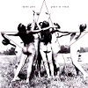 6. Bardo Pond – Peace On Venus
La muralla shoegaze sigue ahí, pero Peace on Venus transmite una sensación general menos ruidosa que de costumbre por la presencia más frecuente de la flauta y de pasajes más bellos. Un disco que evoca sonidos druidicos, místicos y paganos.
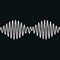 7. Arctic Monkeys – AM
El siempre necesario toque mainstream, levantando odios y pasiones por doquier, Arctic Monkeys trastocan hasta a sus fans acérrimos y se sacan de la manga un disco de «sonido negro». Un álbum para la noche, impregnado de R&B y soul caben en el álbum con más chulería del año.
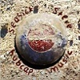 8. Seasick Stevie – Hubcap Music
El ex-vagabundo más entrañable de estados unidos vuelve más refinado que nunca. Aunque su guitarra construida con el tapacubos de un coche suena igual de paleta que siempre, los coros femeninos aportan sutileza a su trabajo más variado hasta ahora.
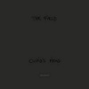 9. The Field – Cupid’s Head
Un loop de loops. La formula de siempre pero sigue funcionando. El sonido de The Field se ha tornado ligeramente más oscuro, intentando que caigas en su espiral de ansiedad electrónica.
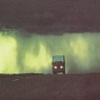 10. Shooting Guns – Brotherhood Of…
Stoner/doom y krautrock en el genial debut del grupo. Un trip desértico en el que no innovan nada pero que combina sus influencias con la gracia de unos veteranos.
Top Nacional 2013:
 1. Triángulo De Amor Bizarro – Victoria…
1. Triángulo De Amor Bizarro – Victoria…
Pop aplastado por un frenesí de guitarras. A día de hoy mi banda nacional favorita. Las guitarras son más afiladas que nunca y los guiños industriales, por ejemplo el primer tema, no hacen mas que aderezar el conjunto. Imprescindible.
2. Belako – Eurie
Bebiendo del mejor post punk ochentero destacan las geniales y pegadizas melodías, el teclado, y una voz que, al igual que la guitarra, pasa de la dulzura a la rabia dando variedad al disco.
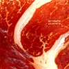 3. Betunizer – Gran Veta
Su propuesta es única, su calidad innegable, sus letras una locura. Con este disco asientan lo conseguido con el alocado Boogalizer. Solo me queda desear que sigan sacando un disco cada año.
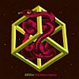 4. Siesta! – Terror Uterino
Gran sorpresa el descubrimiento del animado krautrock de Siesta!. Instrumentalmente son una especie de Lüger pero con más marcha. Conceptualmente y letrísticamente unos Betunizer psicodélicos.
 5. Santo Rostro – Santo Rostro
5. Santo Rostro – Santo Rostro
Con un stoner/sludge duro, potente y rápido, del estilo que explotó con el éxito de Mastodon, Santo Rostro debutan con un pepino de disco en el que destaca el vocalista y el trabajo de guitarra, entre la brutalidad y el virtuosismo.
Menciones Especiales 2013:
Este año —quizás en el que más música he escuchado— he tenido que dejar muchísimos discos fuera del top, un año de un nivel notable que intentaré resumir aquí con algunas recomendaciones. En terrenos psicodélicos destacaré a Destruction Unit, Kikagaku Moyo, Hey Colossus, Stonehenge, Earthless, The Cosmic Dead, Acid Mothers Temple o Tentudía. Grandes grupos de stoner/rock como ASG, Stonehenge, Monster Truck, Vista Chino y Clutch. En terrenos metaleros de distinta índole me quedo con Shining, Fyrnask, Maximum the Hormone y Windhand. Bonnie Prince Billy, Hank Williams III, The Rides, Tedeschi Trucks Band, Robbie Fulks y Guadalupe Plata han mantenido a flote el panorama folk/country, sin olvidarnos de la propuesta de folk nórdico de Wardruna. Para acabar destacaré los discos de Beastmilk y Gary Numan en terrenos post punk/industrialoides y el inclasificable Virgins de Tim Hecker.
Sorpresas 2013:
Remarco aquí algunos grupos y discos, sean o no de los mejores del año, que por una u otra razón me han sorprendido: Wrekmeister Harmonies y Year of no Light por su capacidad para combinar la belleza y la fuerza de la forma más delicada. Tim Hecker y su increíble Virgins, uno de los discos del año (te guste o no) por su combinación de drone y música neoclásica. Stonehenge y su orginal disco combinando rock psicodélico, progresivo y blues con un resultado que por momentos es hasta difícil de asimilar. Por último la obligado mención para Arcade Fire, por su capacidad por llevar la vergüenza ajena, el mojabraguismo y la casposidad a un nuevo nivel más allá de la comprensión humana.
____________________________________________________
Mcore
Top General 2013:
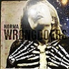 1. Norma Jean – Wrongdoers
El disco más adictivo del año. Caos, mala leche y epicidad aunados en un mismo disco compuesto por una de las bandas más personales del panorama. Norma Jean se han apuntado un tanto muy gordo este año y sus pegadizos riffs resuenan constantemente en mi cabeza. No concibo un verano de 2013 sin la compañía de este disco.
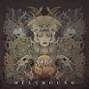 2. Fit For An Autopsy – Hellbound
El deathcore regresó a casa por navidad. Un género que parecía sumergido en un mar de monotonía y aburrimiento aún nos puede brindar destellos de calidad como Hellbound, el trabajo de los norteamericanos Fit For An Autopsy. Un disco muy sólido y que refleja lo mejor del deathcore en cada uno de los devastadores temas que lo componen.
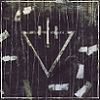 3. The Devil Wears Prada – 818
Difícil me ha sido bajar este disco al tercer puesto, mi corazoncito machocorista pudo conmigo. Lo cierto es que el nuevo trabajo de The Devil Wears Prada es una genialidad y una apuesta bastante acertada. Diría que lo mejor que han grabado hasta la fecha. Divertido, dinámico y contundente. Espero que sigan por esta línea.
4. Rosetta – The Anesthete
Rosetta han dado con la tecla del sonido que más me podría enamorar. Desde The Galilean Satellites, volver a escuchar un disco de Rosetta se me hacía un poco cuesta arriba. Un grupo que borda la música que practica pero que en algunos discos siempre he echado en falta cierta varianza en su sonido y que jugasen con otros elementos. The Anesthete sabe conjugar el lado más agresivo de la banda con el ambiental y han vuelto a ganarme por completo.
5. Arsonists Get All The Girls – Listen…
Tampoco esperaba que estos tios fueran a editar un disco que me acabase gustando tanto. Bajo Listen to the Color se esconde una técnica impresionante y posiblemente sea el disco que más me ha gustado en ese aspecto. También es un trabajo bastante divertido y cargado de momentos dignos de un quinto puesto.
 6. Bring Me The Horizon – Sempiternal
6. Bring Me The Horizon – Sempiternal
Un disco que tiene gancho. Una vuelta más en el sonido de la banda y lo cierto es que tras cuatro discos siempre se han ido colando en mis tops de lo mejor del año y eso dice mucho de ellos (y de mí también xD). Continúan elaborando temas pegadizos e introduciendo nuevos aires a su música, aunque sí es cierto que esta vez rozando el límite de lo comercial. Veremos que nos depara la banda en el futuro, sobretodo tras la marcha de Jona.
 7. Jungbluth – Part Ache
7. Jungbluth – Part Ache
Sorprendente la apuesta de estos alemanes, por la infinidad de géneros que emana Part Ache y la ideología por la que abogan. Si tuviese que basarme en alguna metáfora para describir este disco diría que Part Ache es un cuchillo helado amenazando el cuello de todo aquel que se atreva a escucharlo. Aún me quedan horas para sumergirme por completo en este trabajo que me ha ido ganando poco a poco.
8. Still Remains – Ceasing To Breathe
El visitante inesperado que se presenta sin previo aviso. Así llegó Ceasing To Breathe, trayéndome los recuerdos del metalcore de hace unoa década y animándome a escucharlo una y otra vez en los últimos días del año. La verdad es que un octavo puesto quizás sea excesivo para lo que realmente es el disco pero como me muevo mucho por sensaciones, los recuerdos que me han traído Still Remains este año, los pagaría a precio de oro.
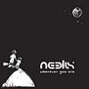 9. Neelix – Wherever You Are
Una mención a la música electrónica que he escuchado este año. Me gustaría haber metido más cosas de este género, pero la cosa ha estado realmente apretada. Me decanté por lo que más he escuchado en este aspecto, y aquí gana el EP Wherever You Are, de Neelix, con su efectivo trance progresivo. A decir verdad, no es un artista que me haya llamado la atención antes ni con otros trabajos, pero Wherever You Are tiene la gracia de unos desarrollos muy similares a la música psytrance sin llegar a meterse de lleno en dicho género.
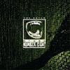 10. Steak Number Eight – The Hutch
Aunque es cierto que hay otras cosas que he escuchado mucho más, me gustaría terminar mi top con este disco, porque en su género es de lo poco que he podido disfrutar. Me encanta como han trabajado la voz melódica, haciendo sus temas bastante cantables sin dejar de lado su sonido más progresivo.
Top Nacional 2013:
 1. The Chaos Is Coming – Kaleidoscope
1. The Chaos Is Coming – Kaleidoscope
Vaya por delante que este 2013 poco he disfrutado de grupos nacionales en comparación con años anteriores, pero sí que dedicaré un espacio a los discos que más me han llamado la atención, como el disco de los vigueses The Chaos Is Coming, un grupo nacional de metalcore que nos han sorprendido con un EP de un sonido muy similar al de bandas como los extintos The Eyes of a Traitor. El grupo muestra buenas maneras y con ese sonido, y si siguen madurando, les auguro éxito incluso en el extranjero.
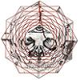 2. Subliminal Chaos – Witchcraft
Con un EP no tan bueno como el del año pasado, creo que estos sevillanos vuelven a merecerse colarse en algún top anual. Segundo puesto para ellos porque me encanta ese aire frenético que dan a sus composiciones y a las distintas influencias que se aprecian en su sonido.
 3. The Suicide Of Western Culture – …
3. The Suicide Of Western Culture – …
La verdad es que este disco me ha entretenido bastante durante el último mes del año. Una electrónica atractiva, sencilla y efectiva hacen de su disco una gran propuesta para días poco animados en los que precisas energía.
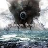 4. Eternal Storm – From The Ashes
Dentro del death melódico, esta gente han conseguido editar un trabajo bastante sólido y correcto. Otro de los discos de metal que más he escuchado este año a nivel nacional, eso sí, aún tengo pendiente una escucha más intensiva y quizás vuelva a hablar de ellos más adelante.
Menciones Especiales 2013:
Muchas cosas he tenido que dejar fuera de top este año, sobretodo en la parte de metalcore y en la de electrónica. Por ejemplo, Uprising, de Bleed From Within, que podría jugar perfectamente el papel de top 11, con su técnico y preciso metalcore y otros grupos como Like Moths To Flames u Oathbreaker han editado discos que he escuchado mucho pero que al final han acabado desinflándose con el tiempo. En electrónica, se han hecho cosas muy atractivas, destacaría los discos de 1200 Micrograms, Liquid Soul y sobretodo los EPs de Rex Mundi dentro del ámbito del psytrance; y otros como Hecq o Applescal, dentro del idm, con unos discos bastante entretenidos. Fuera de estos campos, si tuviese que quedarme con un disco, sin duda sería con Kveikur, de Sigur Ros. Tampoco negaré lo bien que me lo he pasado con lo último de Death Grips.
Sorpresas 2013:
Quizás lo que más me ha sorprendido este año haya sido el disco de Jungbluth, ya incluido en el top con esa propuesta tan gélida y original. También me he llevado una grata sorpresa descubriendo un grupo de metal extremo como Nails, y prácticamente con toda la sección de electrónica que he mencionado anteriormente. Still Remains y Arsonist Get All The Girls podrían encuadrarse también en este apartado, pues después de tanto tiempo donde no les he prestado tanta atención, han acabado por gustarme de nuevo.
____________________________________________________
Jolocho
Top General 2013:
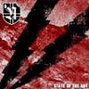 1. Nordvrede – State Of The Art
Prueban que no hacen falta justificaciones rebuscadas, innovaciones memorables o invitaciones al esperpento para hacer algo original bajo la insignia del black metal. ¿Portadas rosas, purple metal? ¿En serio? Véase también furia gélida noruega que es Monument Viktoria, también de Nordvrede, y la transición de la rabia a la melancolía más bella jamás compuesta que es Natur, de Kaevum.
 2. Paysage d’Hiver – Das Tor
2. Paysage d’Hiver – Das Tor
Mi divorcio con el black metal atmosférico no tiene vuelta atrás: sólo vislumbro viajes aislados, inesperados: como el de Das Tor. Haceros un favor y dejad de compararlo con Burzum: estáis haciendo el ridículo. Son odios distintos. Véase también las perfectas armonías finesas de Alghazanth en The Three-Faced Pilgrim, la épica chamánica de Darkestrah en Manas o la mística mediterránea de Acherontas en Amen Ti.
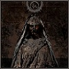 3. Gris – À l’Âme Enflammée, l’Äme…
He pasado incontables madrugadas de verano en su compañía. La sensibilidad con la que está compuesta esta obra es algo fuera de lo común, y no esperéis que consiga enclaustrarla en tres líneas. Simplemente, este disco me hace pensar en algo tan antitético a priori como es el black metal de cámara. Va a envejecer muy bien. Véase también el prodigioso debut de Thy Light, No morrow shall dawn, o el fantástico Réminiscence de sus compatriotas Csejthe.
4. Triumph, Genus – Vsehorovnost Je…
Enésima reinterpretación de los Satyricon del Nemesis Divina. Sí. Pero hecha con un completo dominio de las dinámicas y los fills que está más allá de vuestra comprensión de plebeyos. Aquí todos los rifs tienen músculo por igual. La voz guía con su discurso encendido y cruel al resto de la instrumentación. Véase también el ecléctico y homónimo nuevo disco de sus padres, Satyricon, o la rabia disonante y cruel de los franceses Aosoth en IV: An arrow in heart.
5. Goatmoon – Tahdon Riemuvoitto
Nadie se esperaba un disco así. El maestro finés ha decidido, en primer lugar, revisar alguno de sus temas antiguos en clave de folk medieval (flauta, arpa de boca, acústica), y por último incluir algunos nuevos temas de un black metal de tintes sinfónicos. Sea en clave folk, sea en clave sinfónica, los riffs que definen a Goatmoon siguen ahí.
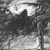 6. Morok – Fiery Dances Of Dying
El debut en larga duración de estos alemanes supone muchas cosas. Por un lado, suple la notable ausencia de un nuevo disco de Velimor. Que ya es difícil. Por otro, demuestra lo bien que saben desplegar su entramado de folk y pagan metal. Al black lo miran de soslayo, que nunca está de más. Véase también el fastuoso nuevo disco de sus compatriotas Falkenbach, Asa.
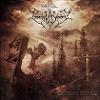 7. Imperium Dekadenz – Meadows Of…
Dentro del black metal sinfónico, está todo muy trabajado. Con todo, discos como éste salen a la superficie por su estupenda ejecución y admirable composición. Éstos alemanes emocionan.
 8. Altar Of Plagues – Teethed Glory And…
8. Altar Of Plagues – Teethed Glory And…
Al principio, pensaba que la colección de temas aquí presentada eran una suerte de variaciones en clave industrial sobre el armazón rítmico del segundo tema, God alone. Ahora no sé ni lo que pensar. Véase también el viraje industrial sobre estructuras blackers propuesto por Phobonoid en Orbita, o los devaneos abstractos de Servile Sect en su EP Glowing.
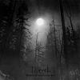 9. Djevel – Besatt Av Maane Og Natt
El proyecto blacker del cantante de Kvelertak. Lo sé: es una descripción que no inspira confianza alguna. Pero la merece. Arrollador segundo disco, capaz de helarte la sangre con ese riffeo con reminiscencias absolutas a los buenos tiempos. Ah, nostalgia. Qué poderosa eres.
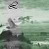 10. Lustre – Wonder
Esta maravilla acompañará las noches de invierno que nos quedan. Teclados tocados bajo la aurora boreal. Véase también el debut de Caladan Brood, Echoes of battle, y el portentoso triple split temático Converge, rivers of hell de Midnight Odyssey, The Crevices Below y Tempestuous Fall.
Top Nacional 2013:
 1. Fasenuova – Salsa De Cuervo
1. Fasenuova – Salsa De Cuervo
Gente libre haciendo música para oyentes libres. Todo flota, todo pasa y todo tiene sentido en este disco. Sí, todo tiene sentido. Me apasiona la sinceridad y la ingenuidad de su esencia.
2. Don The Tiger – Varadero
Mucho se habla de la negatividad innata de los Death grips, pero resulta que tenemos a mentes más enfermas en nuestro propio estado. Sólo que Adrián de Alfonso prefiere los tonteos con el industrial más minimalista. A ver si hay suerte y el tiempo le hace justicia.
Menciones Especiales 2013:
Las vacas sagradas del black metal han sacado todas disco, y cada una ha demostrado lo poco que le importan las expectativas de sus fans más trvues: Darkthrone (aunque casi me ha gustado más el de Sarke que el de Darkthrone), Burzum y Satyricon. Un tiro de sal así siempre es necesario entre tanto tonto motivado suelto. Peste Noire y Summoning han sido más fieles al estilo que les hizo famosos. Oranssi Pazuzu han facturado un disco increíble…, y Deafheaven también, pesaos, que sois unos pesaos. Swans, aunque ya no sigan de moda, le siguen echando bemoles a su carrera con un doble directo basado enteramente en la gira de The Seer. Hay temas nuevos, hay duraciones dilatadas, hay drone y hay mínima variación. Es la promesa cumplida por Michael Gira: The Seer es un disco con vistas a ser únicamente completado en directo. Gigantesco el indie apocalíptico en el tono pero comedido en la ejecución de Wooden Hand & The World War IV. Back to land de Wooden Shjiips y Afraid of heights de Wavves son los discos que más buena onda me han dado este 2013. El primero me sigue recordando a la versión psicodélica de Julio Iglesias y los segundos a unos Weezer más surferos. ¿habéis escuchado esas versiones surferas de clásicos del black metal que circulan por Youtube? Pues ahora dadle una escucha al Paurpura Fraeovibokos de Wulkanaz y decidme, ¿tienen o no tienen un aire? He matado las horas perdidas con Echo street de Amplifier. Austin Lunn demuestra seguir siendo el batería más experto en meter fills en el nuevo de Seidr, Ginnungagap. These new puritans me han sorprendido con la clase que tienen a la hora de producir un disco orgánico como Field of reeds, y R. Andrew Lee ha realizado una labor tan arqueológica como inabarcable del vasto November de Dennis Johnson. La bizarrada de Mamiffer & Circle grabada en una iglesia finesa, Enharmonic intervals, me ha fascinado cosa mala. Circle of ouroborus han sacado un excelente The final egg, y todavía siguen sin ser ni medio conocidos en el underground. Mejor para ellos.
Sorpresas 2013:
Una muy esperada: el debut en larga duración de los británicos White medal, Guthmers Hahl. No esperaba para nada un sonido tan paleolítico, absurdo y potente a la vez. Y lo peor de todo es que suenan hasta épicos. También llamaría sorpresa al debut de los franceses Situs magus, Le grande ouvre: me hace pensar en lo desquiciada y enferma que es la escena blacker de su país. Ya no lo digo por las disonancias enrevesadas y los guturales… es que, en general, todo suena desquiciado. Desquiciado pero calmado: es como una marcha fúnebre hacia atrás.
____________________________________________________
Apoyános